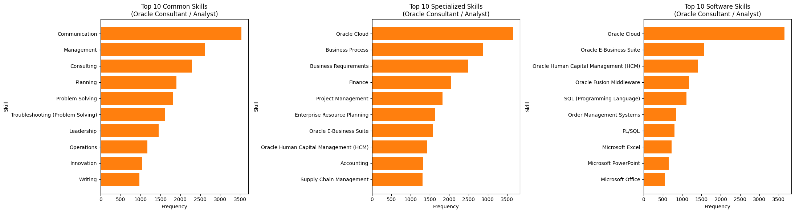
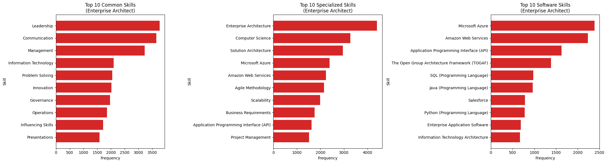
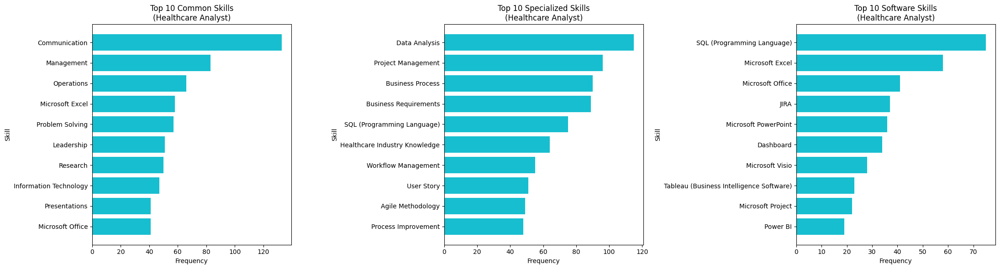

The significance of this topic stems from the accelerating evolution of data science, business analytics, and machine learning in today’s digital economy. According to According to PwC ((2024)), AI-related job skills are evolving 66% faster than those in non-AI sectors, signaling a profound transformation in the job market. , AI-related job skills are evolving 66% faster than those in non-AI sectors, signaling a profound transformation in the job market. As organizations generate unprecedented volumes of data, the ability to interpret, manage, and extract actionable insights from this data has become an indispensable capability. AI technologies are no longer confined to research labs—they are now deeply embedded in daily business operations, creating new opportunities across a wide range of industries. In this context, understanding the emerging skills and trends is not only essential for current job readiness but also for influencing the future of work and business innovation.
1.1 Current Trends Driving the Importance of AI and Data Skills
In 2024, the integration of artificial intelligence and machine learning into core business strategies has intensified the demand for professionals proficient in developing, deploying, and optimizing AI systems. Key competencies now include mastery of machine learning algorithms, data engineering, and the implementation of scalable AI models. For instance, companies like Meta are increasingly investing in professionals who can support large-scale AI initiatives through advanced model development and data pipeline automation (Allyn (2024)). Moreover, as automation becomes more pervasive, skills in predictive analytics, process automation, and data-informed decision-making are becoming crucial across sectors. The convergence of big data technologies, AI solutions, and industry-specific expertise marks a pivotal shift in workforce requirements, with these capabilities emerging as critical assets in a rapidly transforming job market.
1.2 Expected Findings and Analytical Focus
Through our analysis, we aim to identify the essential technical and strategic skills shaping the future of data science, business analytics, and machine learning. We anticipate a pronounced focus on machine learning expertise, particularly regarding algorithm design and model deployment. As the demand for data-literate professionals continues to surge, familiarity with big data ecosystems and decision-support platforms will be increasingly vital. Furthermore, we expect industry verticals such as retail, finance, and healthcare to demonstrate a growing reliance on domain-specific analytics to enhance operational efficiency and guide strategic planning. These findings will provide valuable insights into the evolving skill sets necessary for success in a data-driven, AI-augmented business environment.
2 Literature
With the objective of gaining better understanding of current trends within the AI and data science job market, a short literature review was performed. Three key studies have been selected to illustrate the current landscape and future directions of job skills in this domain.
In the first study, a large-scale analysis of U.S. job postings was done to examine the impact generative AI adoption has on skill requirements. Findings indicate that roles incorporating generative AI demand 36.7% higher levels of cognitive skills, including critical thinking and complex problem-solving, as well as a 5.2% increase in social skills such as collaboration and communication. This evidence suggests a paradigm shift in hiring practices, wherein employers prioritize candidates who combine technical proficiency with advanced interpersonal and analytical capabilities Gulati, Venkataraman, and Raj ((2025)).
The second study we found highlights the growing importance of machine learning and Python programming in data science job postings. The analysis reveals that 69% of job advertisements explicitly require machine learning competencies, while 78% mention Python. This trend underscores the transition of AI and ML literacy from specialized expertise to essential qualifications for data-centric roles, reflecting the centrality of these technologies in organizational strategy and operations Cobloom ((2025)).
Finally, the third study analyzed differences in wage associated with educational attainment and practical skill acquisition in AI-related employment. Their study reveals that demonstrated competencies, such as certifications and project-based experience, confer a 23% wage premium, compared to a 15% premium for formal degrees alone. This differential underscores the increasing importance of skills-based credentials as more reliable indicators of job readiness and value creation in AI-driven labor markets Bone, Conroy, and Tan ((2023)).
To conclude the review, these studies collectively highlight distinct aspects of market hiring behavior, revealing a shift towards skills-based hiring, the importance of knowing machine learning and Python programming, and the increasing value placed on cognitive skills. From the findings we can start to change the way we think about job searching and adjust our strategies to align with the evolving demands of the job market.
3 Geographic distribution of salary and job demand state_map
In order to generate valuable and actionable insights there need to be a general understanding of the job market. The following chart shows the geographic distribution of salary and job demand across the United States. The salary plot reveals that the Northeastern region holds the cluster of states with the highest average salaries with Connecticut, Vermont, and New Jersey being the top three. The job demand plot shows great disparity in job openings across the country with Texas and California being the top job generators. It is important to note that the graphs dont answer many questions about the job market, but instead provide a starting point for deeper analysis. Here we can begin exploring the data with specific goals in mind, actionability for career strategy design.
4 Select (LOT_NAME_SPECIFIC) Mean Salary & Job Demand
Select (LOT_NAME_SPECIFIC) Mean Salary & Job Demand
This chart shows the number of job openings and average salaries for different professional positions. The dual-axis coordinates allow us to observe the relationship between supply, demand and strategic career path.
Among various analyst roles, Data Analyst positions show the highest number of job openings, reflecting strong market demand and suggesting a relatively low barrier to entry. In contrast, Enterprise Architects and Oracle Consultants/Analysts command the highest average salaries despite limited openings, indicating that these roles require highly specialized and scarce skill sets. Healthcare Analysts and Marketing Analysts are associated with both lower salaries and fewer opportunities, suggesting more limited market demand. Meanwhile, General ERP Analysts/Consultants strike a balance—offering relatively high salaries along with a moderate number of job openings—making them attractive for professionals seeking both compensation and career opportunity.
5 Skills radar chart
6 Skill Evaluation
6.1 Marco’s Skills Evaluation
This radar chart illustrates Marco’s self-assessed proficiency across a broad range of analyst-related skills. Overall, he demonstrates strong capabilities in communication, problem solving, detail orientation, leadership, and research, each rated at level 4, highlighting excellent readiness for collaborative work, analytical thinking, and stakeholder engagement.
Marco shows moderate competence in management, Microsoft Excel, data visualization, and presentations, with scores around level 3, indicating a solid foundation in core business skills and common data workflows.
On the technical side, his proficiency in Python, SQL, Tableau, Power BI, statistics, and data management mostly falls between levels 2 and 3, suggesting basic familiarity with these critical tools. Developing deeper technical expertise through targeted training, certifications, or applied project work would help strengthen his profile for data-intensive roles.
In summary, Marco combines strong soft skills, high logical thinking, and business-focused capabilities. If technical skills were further developed, he would be especially well suited for roles that emphasize stakeholder engagement, problem solving, and translating data insights into strategic recommendations.
6.1.1 Millie’s Skills Evaluation
This radar chart illustrates Millie’s self-assessed proficiency across a range of analyst-related skills. Overall, she demonstrates strong capabilities in communication, management, and Microsoft Excel, each rated at 4, indicating solid workplace readiness and strong collaboration skills.
Millie also shows competence in areas like data management, data visualization, problem solving, and leadership, with scores generally around 3, suggesting she has a solid foundation in analytical thinking and business-related soft skills.
On the technical side, her proficiency in tools such as SQL, Python, Tableau, Power BI, and statistics ranges between 2 and 3, reflecting basic familiarity with room for growth. These skills can be strengthened through hands-on project work or further technical training.
In summary, Millie is a promising early-career analyst with strong soft skills and business tool proficiency, and she is actively developing her technical analytics skillset. She would thrive in roles that bridge communication and data, with clear potential to grow into a well-rounded data analyst.
6.1.1.1 Summary
Based on the skill assessment results, Marco and Millie are able to clearly identify their strengths and areas for improvement. This evaluation provides a valuable foundation for them to take targeted actions—whether by enhancing technical skills through training or leveraging existing strengths in communication and management to further optimize their capabilities and better align with their career goals.
7 Kmeans clustering for NAICS2_NAME skills (for Analyst position)
Select Two Way Find Best K
Select (LOT_NAME_SPECIFIC) Mean Salary & Job Demand
This figure reveals how different skill groups correspond to analyst positions. This insight helps align training, hiring, and upskilling strategies with industry-specific needs.
Cluter 0 - Management, Data, Business, Analytics Positions in this group tend to emphasize management and business logic skills. Positions may focus on data-driven decision making, project coordination, and report analysis. People with logical thinking and business sensitivity have a competitive advantage in this group.
Cluster 1 — Administrative and Office Support Skills (Microsoft, Data, Management, Excel, PowerPoint) This group clearly prefers office practical skills and tool operation capabilities. This type of position has lower technical requirements and places more emphasis on detail processing and internal communication skills.
Cluster 2 — Hybrid Skill Group (Data, Management, Language, Programming, Business) This is a group with obvious cross-skills, integrating data analysis, management, language communication and basic programming skills. Language skills and diverse backgrounds are particularly important in this group, suitable for people with communication skills + elementary programming + business perception.
Cluster 3 — Technology-oriented group This group is obviously highly technical, covering core skills (such as Programming, Python, and SQL.) These positions usually require strong programming and logic skills and suitable for computer, statistics, engineering backgrounds or those who have completed technical transformation training.
8 Random Forest
8.1 Model Design Process
Below is an illustration of how the Random Forest model was designed in order to predict the salary of an analyst position based on a list of skills.
8.2 Performance and Assessment
After developing the model we assessed its performance using the following metrics:
RMSE: $24,094.44
Interpretation: Predicted salaries deviate from actual salaries by approximately $24,094. Lower RMSE indicates better accuracy.
R²: 0.635
Interpretation: The model explains 63.5% of the variation in salaries based on the input features. Higher R² reflects stronger predictive power.
Predicted Salary: $91,979.83
Skills used: ["communication", "time_management", "team_leadership", "problem_solving", "critical_thinking","detail_oriented", "innovation", "data_analysis", "statistical_modeling", "dashboard", "power_bi", "etl",
"python_", "sql_", "microsoft_excel"]
8.3 Strategic Use of the Random Forest Model
The Random Forest regression model estimated an expected salary of $91,979.83 using a defined set of 15 skills transformed into binary vector inputs. The RMSE of approximately $24,094 indicates individual salaries may differ substantially due to unmeasured factors. However, the R² value of 0.635 demonstrates that the model is able to capture over 60% of the variation in salaries even with the limited focus on skills alone.
From the beginning, this model was designed to facilitate actionability in the short term. That is why other features such as education level and minimum years of experience were not considered, because they wouldn’t be something that could be easily changed. However, location data (state) was tested as this is a decision one could make when searching for jobs but ultimately excluded because it reduced model performance and added complexity without a proportional gain in precision. The emphasis on modifiable inputs—skills rather than static traits—enables actionable insights for users who want to understand how improving competencies can impact compensation over time. Additionally, selecting only the top 100 skills from the dataset enhances the model’s performance and the users’ benefit from it.
Overall, the model functions as a practical guidance tool, as envisioned, rather than a pinpoint prediction. It offers a way to inform career planning, prioritize skill development, and benchmark earning potential, providing directional insights (a compass) rather than precise estimates (a coordinate).
LOT_V6_SPECIALIZED_OCCUPATION_NAME
Data Analyst 27832
General ERP Analyst / Consultant 9931
Enterprise Architect 8212
Oracle Consultant / Analyst 8141
SAP Analyst / Admin 7734
Business Analyst (General) 4326
Business Intelligence Analyst 3639
Financial Data Analyst 1155
Data Quality Analyst 1070
Healthcare Analyst 261
Marketing Analyst 153
Name: count, dtype: int64
9 PLOT 2 Select (LOT_NAME_SPECIFIC) Mean Salary & Job Demand
LOT_V6_SPECIALIZED_OCCUPATION_NAME
Business Analyst (General) 100888.607317
Business Intelligence Analyst 108886.397778
Data Analyst 103796.067383
Data Quality Analyst 99441.350000
Enterprise Architect 162408.228546
Financial Data Analyst 64161.114219
General ERP Analyst / Consultant 129766.138806
Healthcare Analyst 93609.968085
Marketing Analyst 97650.153846
Oracle Consultant / Analyst 138141.414918
SAP Analyst / Admin 115745.803736
Name: SALARY, dtype: float64
10 Plot 1 Geographic distribution of salary and job demand
11 Plot 3 Extract the top 10 skills by category



12 Skill Gap Analysis
Required Skills for Data Analyst Role:
- Communication
- Management
- Microsoft Excel
- Problem Solving
- Detail Oriented
- Leadership
- Operations
- Research
- Presentations
- Writing
- Data Analysis
- SQL (Programming Language)
- Python (Programming Language)
- Tableau (Business Intelligence Software)
- Dashboard
- Computer Science
- Power BI
- Statistics
- Data Visualization
- Data Management
- R (Programming Language)
- Microsoft Office
- Microsoft PowerPoint
- SAS (Software)
Skill Marco Millie
0 Communication 4 4
1 Management 2 3
2 Microsoft Excel 3 4
3 Problem Solving 4 4
4 Detail Oriented 4 3
5 Leadership 4 4
6 Operations 2 2
7 Research 4 3
8 Presentations 4 3
9 Writing 3 2
10 Data Analysis 4 3
11 SQL (Programming Language) 2 2
12 Python (Programming Language) 3 3
13 Tableau (Business Intelligence Software) 2 1
14 Dashboard 2 2
15 Computer Science 1 1
16 Power BI 2 2
17 Statistics 3 2
18 Data Visualization 4 3
19 Data Management 2 3
20 R (Programming Language) 2 2
21 Microsoft Office 4 4
22 Microsoft PowerPoint 3 4
23 SAS (Software) 1 1
Marco's average rating: 2.88 / 5.00
Millie's average rating: 2.71 / 5.00
In a Jupyter environment, please rerun this cell to show the HTML representation or trust the notebook. On GitHub, the HTML representation is unable to render, please try loading this page with nbviewer.org.
Supplement skills and knowledge through courses and build a solid theoretical foundation and choose tool courses that have the most obvious gap with current skills, and combine them with practical exercises to enhance the absorption effect.
14.2 Project-Based Application
Marco’s Project Exercises:
Netflix Movies & TV Shows (model development and dashboard implementation) – Kaggle
NASA Bearing Dataset (R&D application scenario) – Kaggle
Millie’s Project Exercises:
Used-Car Data (SQL and dashboard operations) – Kaggle
Hotel Booking Demand (simulated consultant scenario analysis) – Kaggle
Apply skills to real data sets through actual project operations, accumulate works and experience (such as business analysis, consulting, data science) and organize them into a portfolio.
Clearly list the technologies and capabilities that need to be strengthened, make strategic plans. Prioritize strengthening core data skills (such as SQL, Dashboarding), and simultaneously improve logical reasoning and problem-solving abilities.
Our analysis of Business Analytics, Data Science, and Machine Learning trends reveals a clear alignment between high-demand roles and specialized skill sets. By mapping job postings and average salaries, we observed that roles in data-related fields offer both abundant opportunities and competitive compensation. The dual bar chart comparing job counts and salaries for specialized occupations further confirms the premium placed on data-driven expertise.
Through skill-based PCA clustering, we identified distinct groups of in-demand competencies, ranging from technical programming skills to business-oriented and communication strengths. This skill landscape highlights the importance of both technical fluency and strategic thinking in the analytics workforce.
In our own team, we conducted a skills assessment and used a random forest model to understand the key features driving role readiness. This was followed by a personalized career strategy map, where each member outlined their skills to improve and aligned courses and projects to build targeted capabilities. This individualized approach not only bridges current skill gaps but also ensures continuous alignment with evolving industry expectations.
In conclusion, the future of analytics careers lies in a balanced development of technical, analytical, and soft skills. By staying informed of labor market trends and proactively upskilling through structured strategies, professionals can position themselves to thrive in this dynamic, data-driven economy.
Bone, M., T. Conroy, and A. Tan. (2023): “Skills or Degree? The Rise of Skill-Based Hiring for AI and Green Jobs,”arXiv preprint, https://arxiv.org/abs/2310.05647.
Gulati, P., A. Venkataraman, and S. Raj. (2025): “Generative AI Adoption and Higher-Order Skill Demands: Evidence from u.s. Job Postings,”arXiv preprint, https://arxiv.org/abs/2405.10312.